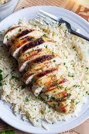

Chicken and Rice

Ingredients
- 4 boneless, skinless chicken breasts
- Salt and pepper
- 1 tablespoon olive oil
- 1 cup long-grain white rice
- 2 cups chicken broth
- 1 cup frozen mixed vegetables (optional)
- 1/2 teaspoon dried thyme
Instructions
- Cook the Chicken: Season 4 chicken breasts with salt and pepper. Heat 1 tablespoon olive oil in a skillet and cook chicken until browned and cooked through, about 5-7 minutes per side. Remove from skillet and set aside.
- Prepare the Rice: In the same skillet, add 1 cup long-grain white rice and 2 cups chicken broth. Stir in 1 cup frozen mixed vegetables (if using) and 1/2 teaspoon dried thyme. Bring to a boil.
- Combine and Simmer: Place chicken breasts on top of the rice. Reduce heat to low, cover, and simmer for 20-25 minutes, until the rice is tender.
- Serve: Remove from heat and let sit for 5 minutes. Fluff rice with a fork and serve with the chicken.